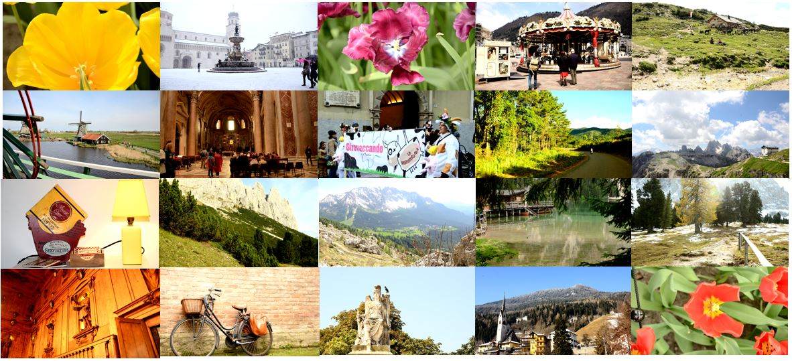

|
A JND DATASET BASED ON VVC COMPRESSED IMAGES
XUELIN SHEN1, ZHANGKAI NI1,WENHAN YANG1, SHIQI WANG1, XINFENG ZHANG2, SAM KWONG1 1Department of Computer Science, City University of Hong Kong, Kowloon Tong, Hong Kong 2School of Computer Science and Technology, University of Chinese Academy of Sciences, Beijing, China |
In this paper, we establish a just noticeable distortion (JND) dataset based on the next generation video coding standard Versatile Video Coding (VVC). The dataset consists of 202 images which cover a wide range of content with resolution 1920×1080. Each image is encoded by VTM 5.0 intra coding with the quantization parameter (QP) ranging from 13 to 51. The details regarding dataset construction, subjective testing and data post-processing are described in this paper. Finally, the significance of the dataset towards future video coding re- search is envisioned. All source images as well as the testing data have been made available to the public.
|

|